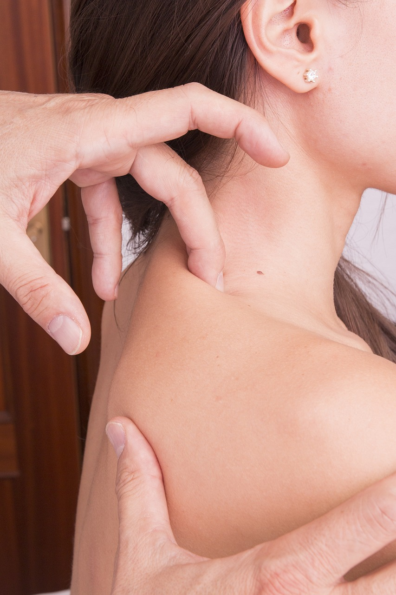

Pomogę Ci z:
Od stóp przez kolana, biodra, kręgosłup czy barki lub szyję.
Takimi jak bóle głowy, brzucha, żeber czy bolesne miesiączkowania.
Warto wrócić do pełni zdrowia, nie martwiąc się o ponowny uraz czy pozostawioną bliznę.
Dobieram techniki zindywidualizowane do Twojego problemu. Każdy z nas jest inny, dlatego różni pacjenci potrzebują różnych bodźców w procesie leczenia.
Techniki stawowe oraz mięśniowe

Równoważenie napięć w całym ciele

Delikatna praca z ciałem

Zadbamy o prawidłową mechanikę ruchu
Oto kilka z ponad 150 pozytywnych opinii ma moim profilu - znanylekarz.pl

Jak zwykle fachowo i całościowe podejście do fizjo, kompletnie przeprowadzony wywiad no i co najważniejsze skuteczna terapia i zalecenia.
To była moja pierwsza wizyta! Pan Tomasz jest niezwykle sympatyczny, a przy tym profesjonalny! Zanim zabral sie do "pracy", przeprowadził wnikliwy wywiad! Dużo tłumaczył! Ciesze się, że do niego trafiłam! Polecam serdecznie!
po miesiącu bezskutecznych wizyt u innego fizjoterapeuty, po ktorych moj stan wręcz się pogarszal, w końcu, z polecenia, trafiłam do Pana Tomasza. już po pierwszej wizycie czułam zdecydowana poprawę w codziennym funkcjonowaniu. naprawdę szczerze polecam każdemu, kto zmaga się z bólem.
Zdecydowanie polecam. Dzięki dużej wiedzy Pana Tomka czułam się doinformowana i zaopiekowana a mój ból znacząco się zmniejszył i odzyskałam większy zakres ruchów.
Pan Tomasz jest bardzo dokładny w swojej pracy, szuka źródła problemu, żeby się go pozbyć. Tłumaczy swoje działania i techniki aby pacjent mógł zrozumieć dlaczego coś się dzieje i co w tym momencie robi lekarz. Bardzo polecam, mi pomógł z bólem kolana na długi czas, pomimo że sport który uprawiam powoduje nacisk na kolana
Pan Tomasz jest fantastycznym fizjoterapeutą wartym polecenia. Jest bardzo sympatyczny, przyjazny a przede wszystkim ambitny, ma ogromną wiedzę na ten temat i widać jak bardzo oczytany jest w tym co robi, co się naprawdę ceni.
Pan Tomek doprowadził do stanu używalności moją rękę, której nie złożył po złamaniu pewien pseudoortopeda z Z.G. Pełen profesjonalizm i wielka wiedza. Wszystko w bardzo przystępny sposób wyjaśnia i tłumaczy. Bardzo dobre efekty terapii pozwalają z pełnym przekonaniem polecić Pana Tomka. Warto zaufać takiemu specjaliście
Ogrom wiedzy, doświadczenie oraz duża skuteczność. Fizjoterapia dała szybkie efekty. Sympatyczna atmosfera na wizytach przy okazji, których od fizjoterapeuty można się dowieźć sporo ciekawostek na temat zdrowia. Świetny specjalista! Bardzo polecam w przypadku jakichkolwiek bóli!
Bardzo profesjonalny fizjoterapeuta, podchodzi holistycznej do każdego problemu, z każdym bólem z którym się zgłaszam po terapii mam spokój, wyczerpująco odpowiada na wszelkie pytania. Serdecznie polecam
Poznaj lepiej swój problem. Nie da się wyczerpać tematu dolegliwości bólowych podczas wizyty. Zależy mi jednak by osoby korzystające z moich usług były świadome i właściwie poinformowane.

W celu zadbania o stałych klientów stworzyliśmy system, który nagradza Twoją lojalność. Każda wizyta zbliża Cię do atrakcyjnych rabatów! Po pięciu wizytach otrzymasz 50% zniżki na kolejną usługę, a po dziesięciu – jedna wizyta będzie całkowicie darmowa.

Nie martw się, u mnie nigdy nie ma ukrytych, dodatkowych kosztów. Możesz zapłacić gotówką jak i kartą.